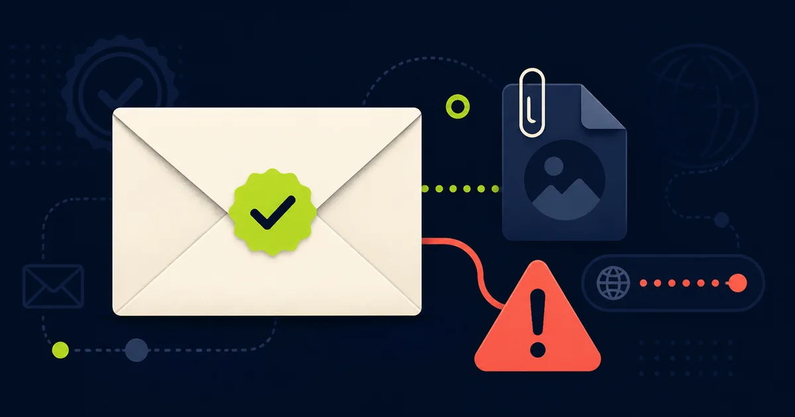

In breve
“Messaggio certificato” non significa “contenuto sicuro”.
Il 15 giugno 2026 CERT-AGID ha comunicato di aver gestito, dall’inizio dell’anno, oltre 650 eventi relativi a caselle PEC compromesse o create per scopi illeciti. Attraverso queste caselle possono arrivare link malevoli, allegati infetti e tentativi di sottrarre credenziali o denaro.
Fonti istituzionali controllate. I numeri provengono da CERT-AGID; caratteristiche e limiti della PEC sono descritti da AgID.
Cosa certifica davvero la PEC
La Posta Elettronica Certificata fornisce ricevute che attestano data di invio e consegna e protegge l’integrità del messaggio durante la trasmissione. Non controlla però che una fattura sia vera, che un allegato sia innocuo o che chi usa la casella sia il suo legittimo titolare.
Una casella autentica può essere stata rubata. In altri casi, il criminale registra una PEC appositamente per inviare messaggi fraudolenti. Il tono formale e la ricevuta di consegna fanno apparire la comunicazione più autorevole di una normale email.
I controlli da fare
- La richiesta era attesa? Un documento inatteso, soprattutto se chiede denaro o credenziali, va verificato separatamente.
- Conosci davvero la casella? Controlla l’indirizzo completo e confrontalo con quello pubblicato sul sito ufficiale o già usato in una pratica reale.
- L’allegato è coerente? Archivi ZIP, file eseguibili, HTML o documenti che chiedono di abilitare funzioni sono segnali di rischio.
- Il link porta al dominio giusto? Leggi l’indirizzo completo prima di aprirlo. Loghi e firme possono essere copiati.
Come verificare un messaggio importante
Non usare i recapiti della PEC
Cerca il telefono dell’ente, del professionista o dell’azienda su un sito ufficiale o in documenti già verificati.
Chiedi conferma dell’oggetto
Descrivi il numero di pratica o la fattura senza inoltrare password e codici. Una verifica telefonica è particolarmente importante prima di cambiare un IBAN.
Apri il portale direttamente
Se la comunicazione riguarda una pratica online, digita l’indirizzo del portale invece di seguire il collegamento contenuto nel messaggio.
Hai aperto il contenuto?
- Hai soltanto letto il messaggio: non significa che il dispositivo sia compromesso. Non aprire altro e procedi con la verifica.
- Hai scaricato ma non aperto un file: eliminalo senza eseguirlo e svuota il cestino. Se è un dispositivo aziendale, avvisa il referente informatico.
- Hai aperto un allegato sospetto: scollega il dispositivo dalla rete e chiedi un controllo tecnico. Non continuare a usare home banking o gestionali sensibili.
- Hai inserito una password: cambiala dal sito ufficiale usando un dispositivo affidabile, chiudi le sessioni attive e abilita l’autenticazione a più fattori.
- Hai pagato: contatta subito la banca e l’organizzazione impersonata.
Come segnalarla
Segnala l’abuso al gestore della tua PEC e inoltra la comunicazione sospetta a malware@cert-agid.gov.it. Prima di inoltrare, rimuovi dati riservati non necessari.
Trasparenza
Fonti verificate
Aggiornamenti e correzioni
Nessuna correzione al momento. Per segnalare un errore scrivi a redazione@hackerino.it.
Aiuta la redazione
Hai ricevuto una PEC sospetta?
Puoi raccontarci il caso senza inoltrare documenti, credenziali o dati personali non necessari.